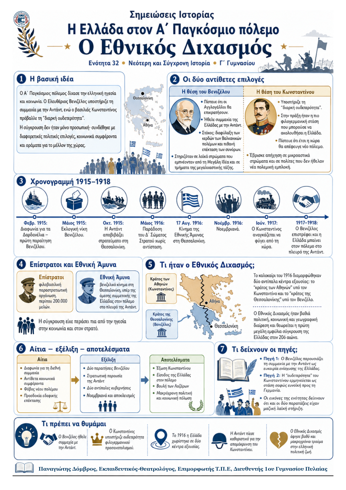

Δεν βρέθηκε η λέξη ή η φράση μέσα στην ενότητα.
1Η βασική ιδέα
Ο Α΄ Παγκόσμιος πόλεμος προκάλεσε βαθιά πολιτική και κοινωνική σύγκρουση στην Ελλάδα. Ο Ελευθέριος Βενιζέλος υποστήριζε τη συμμαχία με την Αντάντ, ενώ ο βασιλιάς Κωνσταντίνος πρόβαλλε τη «διαρκή ουδετερότητα».
Η διαφωνία δεν έμεινε προσωπική. Συνδέθηκε με διαφορετικές εκτιμήσεις για τον πόλεμο, με κοινωνικά συμφέροντα και με αντίθετες αντιλήψεις για το μέλλον της χώρας. Το 1916 δημιουργήθηκαν δύο κέντρα εξουσίας και ο Εθνικός Διχασμός πήρε μορφή ανοιχτής εσωτερικής σύγκρουσης.
2Ιστορικό πλαίσιο
Η Ελλάδα είχε μόλις ολοκληρώσει τους Βαλκανικούς πολέμους και είχε διευρύνει σημαντικά τα σύνορά της.
Στον Α΄ Παγκόσμιο πόλεμο συγκρούονταν η Αντάντ και οι Κεντρικές Δυνάμεις.
Η Οθωμανική αυτοκρατορία και η Βουλγαρία είχαν ταχθεί με τη Γερμανία, γεγονός που περιόριζε τις ελληνικές επιλογές.
Η γεωγραφική θέση της Ελλάδας και η ισχύς του βρετανικού στόλου έκαναν δύσκολη μια ανοιχτή φιλογερμανική πολιτική.
3Οι δύο αντίθετες πολιτικές επιλογές
| Η θέση του Βενιζέλου | Η θέση του Κωνσταντίνου |
|---|---|
Πρόβλεψη: οι Αγγλογάλλοι θα επικρατούσαν. Στόχος: προστασία των κερδών των Βαλκανικών πολέμων και επέκταση των συνόρων. Υποστήριξη: μεγάλα τμήματα των λαϊκών τάξεων, οπαδοί της Μεγάλης Ιδέας και η μεγαλοαστική τάξη, ιδιαίτερα της Διασποράς. Πρακτική επιλογή: συμμετοχή της Ελλάδας στον πόλεμο στο πλευρό της Αντάντ. |
Προτίμηση: συμμαχία με τις Κεντρικές Δυνάμεις, που όμως δεν μπορούσε να εφαρμοστεί ανοιχτά. Δημόσια θέση: «διαρκής ουδετερότητα», ώστε η Ελλάδα να μείνει έξω από τον πόλεμο. Υποστήριξη: μικροαστικά στρώματα που φοβούνταν τον ανταγωνισμό του εξωελλαδικού κεφαλαίου και λαϊκά στρώματα που δεν ήθελαν νέο πόλεμο. Ουσία της πολιτικής: η φιλικότερη προς τη Γερμανία στάση που επέτρεπαν οι συνθήκες. |
4Από τη διαφωνία στην πολιτική ρήξη (1915)
Η σύγκρουση κορυφώθηκε όταν η Αντάντ επιχείρησε να καταλάβει τα Δαρδανέλια τον Φεβρουάριο του 1915. Ο Βενιζέλος πίστευε ότι η Ελλάδα έπρεπε να συμμετάσχει. Ο Κωνσταντίνος αρνήθηκε και ο πρωθυπουργός παραιτήθηκε.
Στις εκλογές του Μαΐου 1915 ο Βενιζέλος νίκησε και επέστρεψε στην κυβέρνηση. Όταν κήρυξε επιστράτευση, ο βασιλιάς διαφώνησε ξανά. Ο Βενιζέλος παραιτήθηκε δεύτερη φορά. Στις εκλογές του Δεκεμβρίου 1915 οι Φιλελεύθεροι απείχαν και σχηματίστηκε κυβέρνηση απόλυτα πιστή στα Ανάκτορα.
5Χρονογραμμή των βασικών εξελίξεων
| Χρόνος | Γεγονός και σημασία |
|---|---|
| Φεβρ. 1915 | Πρώτη παραίτηση Βενιζέλου μετά τη διαφωνία για τα Δαρδανέλια. |
| Μάιος 1915 | Εκλογική νίκη Βενιζέλου και επιστροφή του στην κυβέρνηση. |
| Οκτ. 1915 | Η Αντάντ αποβιβάζει στρατεύματα στη Θεσσαλονίκη για να περιορίσει τη γερμανική επιρροή στα Βαλκάνια. |
| Μάιος 1916 | Γερμανικά και βουλγαρικά στρατεύματα εισβάλλουν στην Ανατολική Μακεδονία. Το Δ΄ Σώμα Στρατού παραδίδεται χωρίς αντίσταση και μεταφέρεται στη Γερμανία. |
| 17 Αυγ. 1916 | Το κίνημα της Εθνικής Άμυνας στη Θεσσαλονίκη ζητά συμμετοχή της Ελλάδας στον πόλεμο στο πλευρό της Αντάντ. |
| Καλοκαίρι 1916 | Διαμορφώνονται δύο αντίπαλα κέντρα εξουσίας: Αθήνα και Θεσσαλονίκη. |
6Η εμπλοκή της Ελλάδας και η κρίση στη Μακεδονία
Η Αντάντ εγκαταστάθηκε στρατιωτικά στη Θεσσαλονίκη, ενώ η Σερβία κατέρρευσε μετά και τη βουλγαρική επίθεση. Η είσοδος γερμανικών και βουλγαρικών στρατευμάτων στην Ανατολική Μακεδονία αποκάλυψε τα όρια της βασιλικής «ουδετερότητας». Οι ελληνικές δυνάμεις δεν αντέδρασαν, ακολουθώντας τις εντολές του Κωνσταντίνου.
7Γιατί η παράδοση του Δ΄ Σώματος Στρατού ήταν κρίσιμη;
Η παράδοση χωρίς αντίσταση προκάλεσε έντονη αγανάκτηση. Έδειξε ότι η επιλογή της ουδετερότητας δεν προστάτευε πάντοτε την ελληνική επικράτεια και ενίσχυσε τους βενιζελικούς που ζητούσαν ενεργή συμμετοχή στο πλευρό της Αντάντ.
8Επίστρατοι και Εθνική Άμυνα
Οι Επίστρατοι ήταν φιλοβασιλική παραστρατιωτική οργάνωση περίπου 200.000 μελών. Δημιουργήθηκαν από εφέδρους που οργανώθηκαν σε συνδέσμους μετά τον αφοπλισμό των ελληνικών δυνάμεων.
Η Εθνική Άμυνα ήταν βενιζελική οργάνωση στη Μακεδονία. Το κίνημά της στη Θεσσαλονίκη ζήτησε την άμεση συμμετοχή της χώρας στον πόλεμο με την Αντάντ.
Οι δύο οργανώσεις δείχνουν ότι η διαφωνία είχε πλέον περάσει από την κορυφή του κράτους στην κοινωνία και στον στρατό.
9Η Προσωρινή Κυβέρνηση της Θεσσαλονίκης
Ο Βενιζέλος εγκατέστησε Προσωρινή Κυβέρνηση στη Θεσσαλονίκη. Διέταξε επιστράτευση, ώστε ελληνικά στρατεύματα να πολεμήσουν στο πλευρό της Αντάντ. Έτσι, η χώρα δεν είχε μόνο δύο αντίπαλες πολιτικές παρατάξεις, αλλά και δύο διαφορετικά κέντρα που ασκούσαν εξουσία.
10Ο Εθνικός Διχασμός
Ορισμός
Εθνικός Διχασμός ονομάστηκε η βαθιά πολιτική, κοινωνική και γεωγραφική διαίρεση της Ελλάδας ανάμεσα στους βενιζελικούς και τους βασιλικούς. Το «κράτος των Αθηνών» βρισκόταν υπό τον Κωνσταντίνο, ενώ το «κράτος της Θεσσαλονίκης» υπό τον Βενιζέλο.
Το σχολικό βιβλίο χαρακτηρίζει το φαινόμενο ως την πρώτη ουσιαστικά εμφύλια σύγκρουση στην Ελλάδα του 20ού αιώνα.
Ο Διχασμός δεν εξηγείται μόνο ως προσωπική σύγκρουση δύο ισχυρών ηγετών. Πίσω από τις επιλογές τους βρίσκονταν διαφορετικές εκτιμήσεις για τον νικητή του πολέμου, αντίθετα κοινωνικά συμφέροντα, ο φόβος ενός νέου πολέμου και η προσδοκία εδαφικής επέκτασης. Για αυτό η σύγκρουση απέκτησε μαζικούς οπαδούς και στις δύο πλευρές.
11Η επέμβαση της Αντάντ και τα Νοεμβριανά
Η Αντάντ επιχείρησε να καταλάβει την Αθήνα. Συμμαχικά στρατεύματα κινήθηκαν από τον Πειραιά, αλλά αποκρούστηκαν από δυνάμεις πιστές στον βασιλιά.
Τον Νοέμβριο του 1916 το «κράτος των Αθηνών» εξαπέλυσε διώξεις εναντίον βενιζελικών. Τα Νοεμβριανά άφησαν τουλάχιστον 35 νεκρούς.
Η Αντάντ κατέλαβε τον Πειραιά και επέβαλε αυστηρό αποκλεισμό στη βασιλική Ελλάδα, αυξάνοντας την πίεση προς τον Κωνσταντίνο.
12Η απομάκρυνση του Κωνσταντίνου και η είσοδος στον πόλεμο
Η Αντάντ απαίτησε την απομάκρυνση του Κωνσταντίνου. Ο βασιλιάς αναγκάστηκε να εγκαταλείψει τη χώρα στις 2/15 Ιουνίου 1917. Άφησε στον θρόνο τον γιο του Αλέξανδρο, χωρίς ο ίδιος να παραιτηθεί επίσημα.
Ο Βενιζέλος επέστρεψε στην Αθήνα, σχημάτισε νέα κυβέρνηση και κήρυξε τον πόλεμο στις Κεντρικές Δυνάμεις. Ελληνικά στρατεύματα πολέμησαν με την Αντάντ στις τελευταίες μάχες του Μακεδονικού μετώπου το 1918.
13Η εσωτερική πολιτική μετά την επικράτηση του Βενιζέλου
Επανήλθε η Βουλή που είχε εκλεγεί τον Μάιο του 1915. Επειδή «αναστήθηκε» πολιτικά, ονομάστηκε Βουλή των Λαζάρων.
Χιλιάδες δημόσιοι υπάλληλοι και στρατιωτικοί που θεωρήθηκαν φιλοβασιλικοί απολύθηκαν.
Στελέχη της βασιλικής παράταξης εκτοπίστηκαν ή εξορίστηκαν, μεταξύ άλλων στην Κορσική.
Οι ενέργειες αυτές δείχνουν ότι η πολιτική επικράτηση του ενός στρατοπέδου δεν έκλεισε αμέσως το χάσμα· αντίθετα, το βάθυνε.
14Μελέτη των ιστορικών πηγών
Οι δύο γραπτές πηγές της ενότητας παρουσιάζουν το βασικό δίλημμα από διαφορετική θέση. Η πρώτη είναι κείμενο του ίδιου του Βενιζέλου, γραμμένο μέσα στα γεγονότα. Η δεύτερη είναι μεταγενέστερη ιστορική ερμηνεία της στάσης του Κωνσταντίνου. Η σύγκρισή τους βοηθά να ξεχωρίσουμε το επιχείρημα ενός πρωταγωνιστή από την ανάλυση ενός ιστορικού.
15Πηγή 1: Το υπόμνημα του Ελευθερίου Βενιζέλου (11 Ιανουαρίου 1915)
Ταυτότητα της πηγής: πρωτογενής, επίσημη πολιτική πηγή. Συντάκτης είναι ο πρωθυπουργός και αποδέκτης ο βασιλιάς Κωνσταντίνος.
Κεντρική θέση: Η Ελλάδα πρέπει να εγκαταλείψει την ουδετερότητα και να συμμετάσχει στον πόλεμο στο πλευρό της Αντάντ.
Βασικό επιχείρημα: Η συμμετοχή προσφέρεται με ανταλλάγματα που μπορούν να δημιουργήσουν «μιαν Ελλάδα μεγάλην και ισχυράν».
Τρόπος πειθούς: Ο Βενιζέλος παρουσιάζει την απόφαση ως ιστορική ευκαιρία. Τονίζει ότι τα πιθανά κέρδη ξεπερνούν ακόμη και τις πιο αισιόδοξες προσδοκίες προηγούμενων ετών.
Τι αποκαλύπτει: Τη σύνδεση της εξωτερικής πολιτικής του Βενιζέλου με τη Μεγάλη Ιδέα, την εδαφική επέκταση και την πεποίθηση ότι η Αντάντ θα νικήσει.
Περιορισμός: Το κείμενο έχει στόχο να πείσει τον βασιλιά. Δεν είναι ουδέτερη αφήγηση και δεν αναπτύσσει τους κινδύνους ή τις αντιρρήσεις της αντίθετης πλευράς.
16Πηγή 2: Η ερμηνεία της κωνσταντινικής «ουδετερότητας»
Ταυτότητα της πηγής: δευτερογενής, δημοσιευμένη ιστορική μελέτη του Γ. Γιανουλόπουλου, εκδομένη το 2003.
Κεντρική θέση: Η ουδετερότητα του Κωνσταντίνου δεν σήμαινε ίσες αποστάσεις από τους δύο συνασπισμούς. Ήταν η «φιλογερμανικότερη δυνατή πολιτική» που μπορούσε να ακολουθήσει η Ελλάδα.
Γεωγραφικός περιορισμός: Η χώρα δεν μπορούσε να συμμαχήσει ανοιχτά με τη Γερμανία, επειδή ο ισχυρός βρετανικός στόλος κυριαρχούσε στην ανατολική Μεσόγειο.
Τεκμήριο που προβάλλεται: Ο ιστορικός αναφέρει τη συνεχή τηλεγραφική επικοινωνία του Κωνσταντίνου με τον Γερμανό αυτοκράτορα και την έγκριση του Βερολίνου.
Τι αποκαλύπτει: Η ουδετερότητα παρουσιάζεται ως πολιτική επιλογή με φιλογερμανικό προσανατολισμό και όχι ως απλή προσπάθεια αποφυγής του πολέμου.
Αξία και όριο: Η πηγή αξιοποιεί τη μεταγενέστερη ιστορική έρευνα και ερμηνεύει τα γεγονότα συνολικά. Ωστόσο, εκφράζει την τεκμηριωμένη οπτική του συγκεκριμένου ιστορικού και πρέπει να διαβάζεται συγκριτικά με άλλα στοιχεία.
17Σύγκριση των δύο γραπτών πηγών
| Κριτήριο | Πηγή 1 - Βενιζέλος | Πηγή 2 - Γιανουλόπουλος |
|---|---|---|
| Είδος | Πρωτογενής πολιτική πηγή. | Δευτερογενής ιστορική μελέτη. |
| Σκοπός | Να πείσει τον βασιλιά για συμμαχία με την Αντάντ. | Να ερμηνεύσει τον χαρακτήρα της βασιλικής ουδετερότητας. |
| Κύρια έμφαση | Πιθανά εθνικά και εδαφικά οφέλη. | Φιλογερμανικός προσανατολισμός και γεωγραφικοί περιορισμοί. |
| Οπτική | Η θέση ενός άμεσου πρωταγωνιστή. | Η μεταγενέστερη ανάλυση ενός ιστορικού. |
| Κοινό συμπέρασμα | Η ουδετερότητα δεν θεωρείται η καλύτερη επιλογή. | Η ουδετερότητα δεν ήταν πραγματικά αμερόληπτη. |
18Οι φωτογραφίες ως ιστορικές μαρτυρίες
Στη δεύτερη σελίδα της ενότητας παρουσιάζονται δύο συγκεντρώσεις του Μαΐου 1917. Στη Θεσσαλονίκη, οπαδοί του Βενιζέλου εμφανίζονται με σύνθημα εναντίον του Κωνσταντίνου. Στη Βέρνη της Ελβετίας, οπαδοί του βασιλιά κρατούν αντίθετο σύνθημα υπέρ του.
Οι εικόνες δείχνουν ότι ο Διχασμός είχε μαζική κοινωνική έκφραση και δεν περιοριζόταν στις αποφάσεις δύο ηγετών.
Τα αντίθετα συνθήματα φανερώνουν έντονη πόλωση και προσωποκεντρική ταύτιση των δύο παρατάξεων.
Η παρουσία βασιλικών οπαδών στη Βέρνη δείχνει ότι η αντιπαράθεση εκφραζόταν και έξω από τα ελληνικά σύνορα.
Οι φωτογραφίες χρειάζονται προσεκτική χρήση: αποτυπώνουν συγκεκριμένες συγκεντρώσεις, όχι το σύνολο της ελληνικής κοινωνίας.
19Αίτια - εξέλιξη - αποτελέσματα
Αίτια Διαφωνία για τη διεθνή συμμαχία • διαφορετικές κοινωνικές στηρίξεις • φόβος νέου πολέμου • Μεγάλη Ιδέα και προσδοκία επέκτασης. |
Εξέλιξη Δύο παραιτήσεις Βενιζέλου • στρατιωτική παρουσία της Αντάντ • Επίστρατοι και Εθνική Άμυνα • δύο κυβερνήσεις • Νοεμβριανά. |
Αποτελέσματα Έξωση Κωνσταντίνου • είσοδος της Ελλάδας στον πόλεμο με την Αντάντ • διώξεις αντιπάλων • μακρόχρονη κοινωνική και πολιτική πόλωση. |
|---|
20Σημαντικά πρόσωπα και όροι
| Πρόσωπα | Βασικοί όροι |
|---|---|
Ελευθέριος Βενιζέλος: πρωθυπουργός, υπέρ της συμμαχίας με την Αντάντ. Κωνσταντίνος: βασιλιάς, υποστηρικτής της «διαρκούς ουδετερότητας». Αλέξανδρος: γιος του Κωνσταντίνου, ανέβηκε στον θρόνο το 1917. |
Αντάντ: συμμαχία στην οποία ανήκαν οι Αγγλογάλλοι. Κεντρικές Δυνάμεις: αντίπαλος συνασπισμός με κύρια δύναμη τη Γερμανία. Επιστράτευση: κλήση στρατιωτών και εφέδρων σε ενεργή υπηρεσία. Αποκλεισμός: έλεγχος λιμανιών και ανεφοδιασμού για άσκηση πίεσης. Βουλή των Λαζάρων: η Βουλή του Μαΐου 1915 που επανήλθε το 1917. |
21Τι πρέπει να θυμάμαι
Ο Βενιζέλος επέλεγε την Αντάντ για λόγους ασφάλειας, νίκης και εδαφικής επέκτασης.
Ο Κωνσταντίνος υποστήριζε ουδετερότητα που στην πράξη ήταν η πιο φιλογερμανική δυνατή στάση.
Η διαφωνία οδήγησε σε παραιτήσεις, εκλογικές συγκρούσεις και τελικά σε δύο αντίπαλα κέντρα εξουσίας.
Οι Επίστρατοι και η Εθνική Άμυνα μετέφεραν τη σύγκρουση στην κοινωνία και στον στρατό.
Η Αντάντ επέβαλε αποκλεισμό και εξανάγκασε τον Κωνσταντίνο να φύγει το 1917.
Η Ελλάδα μπήκε τελικά στον πόλεμο με την Αντάντ, ενώ οι εσωτερικές διώξεις διατήρησαν και βάθυναν τον Διχασμό.
Κεντρικό συμπέρασμα: Ο Εθνικός Διχασμός ήταν σύγκρουση πολιτικών επιλογών, κοινωνικών συμφερόντων και διαφορετικών οραμάτων για τη θέση της Ελλάδας στον κόσμο.
